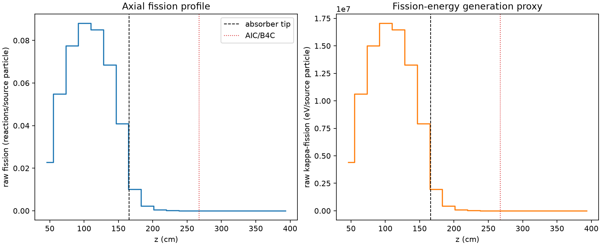
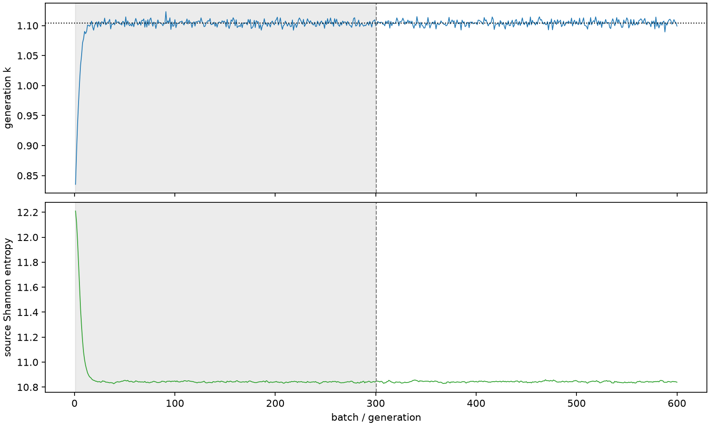

| field | value |
|---|---|
| experiment | V2-STAGE_128_OGRENCI_02-0014 |
| k | 1.1042565103285604 |
| MC standard error | 0.00018550359548606945 |
| seconds | 979.5111464239999 |
| acceptance | not_assessed |
| convergence | review_required |
Completed is output integrity only; physical and statistical review required. Zero tallies do not prove zero production or zero uncertainty.
| diagnostic | value |
|---|---|
| geometric fuel voxels | 5280 |
| zero fission tally voxels | 1258 |
| low signal fuel voxels | 2352 |
| low signal fission share | 9.239532919425509e-05 |
| low signal kappa share | 9.243904345547759e-05 |
| important fission share | 0.9500675837330663 |
| previous filter included | 2928 |
| duration estimate s | 1562.5173488400023 |
| actual minus estimate s | -583.0062024160025 |
| fission relative MC error | statistics |
|---|---|
| all_geometric_fuel | {"voxels": 5280, "positive_mean_voxels": 4022, "zero_mean_voxels": 1258, "undefined_relative_error_voxels": 1258, "median": 0.01532972269664714, "p95": 0.9484216969405411, "maximum": 1.0000000000000002} |
| low_signal | {"voxels": 2352, "positive_mean_voxels": 1094, "zero_mean_voxels": 1258, "undefined_relative_error_voxels": 1258, "median": 0.5837362762974414, "p95": 1.0, "maximum": 1.0000000000000002} |
| important_95pct | {"voxels": 1735, "positive_mean_voxels": 1735, "zero_mean_voxels": 0, "undefined_relative_error_voxels": 0, "median": 0.006060918495416125, "p95": 0.010104789453594913, "maximum": 0.01101529165438618} |
| outside_previous_filter | {"voxels": 2352, "positive_mean_voxels": 1094, "zero_mean_voxels": 1258, "undefined_relative_error_voxels": 1258, "median": 0.5837362762974414, "p95": 1.0, "maximum": 1.0000000000000002} |
| kappa_fission relative MC error | statistics |
|---|---|
| all_geometric_fuel | {"voxels": 5280, "positive_mean_voxels": 4022, "zero_mean_voxels": 1258, "undefined_relative_error_voxels": 1258, "median": 0.015309073406643663, "p95": 0.9483921754134277, "maximum": 1.0000000000000002} |
| low_signal | {"voxels": 2352, "positive_mean_voxels": 1094, "zero_mean_voxels": 1258, "undefined_relative_error_voxels": 1258, "median": 0.5836056881254654, "p95": 1.0, "maximum": 1.0000000000000002} |
| important_95pct | {"voxels": 1735, "positive_mean_voxels": 1735, "zero_mean_voxels": 0, "undefined_relative_error_voxels": 0, "median": 0.006053172497415589, "p95": 0.01009158479379079, "maximum": 0.01100257250682424} |
| outside_previous_filter | {"voxels": 2352, "positive_mean_voxels": 1094, "zero_mean_voxels": 1258, "undefined_relative_error_voxels": 1258, "median": 0.5836056881254654, "p95": 1.0, "maximum": 1.0000000000000002} |
| axial bin | fission share | kappa-fission share |
|---|---|---|
| 1 | 0.050531548748666076 | 0.05053362468888649 |
| 2 | 0.12176977720723027 | 0.12176846225763259 |
| 3 | 0.17200526509713004 | 0.17200288880948536 |
| 4 | 0.1953200171611997 | 0.19531731153280604 |
| 5 | 0.18854970796911544 | 0.18854697131960801 |
| 6 | 0.1520721473542626 | 0.15207014294276114 |
| 7 | 0.09087345799210546 | 0.09087289493695082 |
| 8 | 0.022293325700406964 | 0.022300298666719964 |
| 9 | 0.004973291612635656 | 0.0049752508563972245 |
| 10 | 0.001203399566549175 | 0.0012039021598022948 |
| 11 | 0.00030808680206984625 | 0.0003082304705153147 |
| 12 | 7.689591217000812e-05 | 7.69314823080534e-05 |
| 13 | 1.780792666027453e-05 | 1.7814385380182047e-05 |
| 14 | 3.8891786826930385e-06 | 3.8921505220426986e-06 |
| 15 | 1.1633670879750013e-06 | 1.16467202607541e-06 |
| 16 | 2.184040279431219e-07 | 2.1866819840564417e-07 |
| 17 | 0.0 | 0.0 |
| 18 | 0.0 | 0.0 |
| 19 | 0.0 | 0.0 |
| 20 | 0.0 | 0.0 |
Histories include the inactive-to-active transition at batch 300. kappa-fission approximates fission energy production, not total heat deposition.

